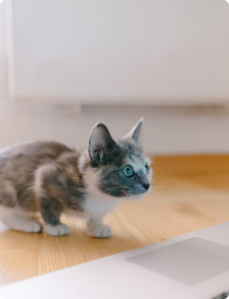

------Жил-был маленький компьютер в заброшенном складе на окраине города. Он был маленьким и скромным, но очень умным и талантливым. Каждый день он с нетерпением ждал своего создателя, который приходил и заботился о нем. Компьютер мечтал о том, чтобы найти свое место в мире и сделать что-то важное и полезное. Однажды компьютеру повезло, и он был куплен молодым ученым, который занимался исследованиями в области искусственного интеллекта. Молодой ученый провел много времени, обучая компьютер новым навыкам и умениям, и вскоре маленький компьютер стал одним из самых умных в своем классе. Он смог решать сложные задачи и находить новые решения для проблем, с которыми сталкивались его создатель и другие ученые. Компьютер был очень счастлив, что мог быть полезен людям и делать важные открытия. Однажды маленький компьютер нашел ключ к решению одной из самых сложных проблем в мире искусственного интеллекта. Его создатель был так впечатлен, что решил поделиться открытием со всем миром. Благодаря маленькому компьютеру была сделана важная находка, которая помогла ученым развивать искусственный интеллект еще быстрее. И вот маленький компьютер понял, что он нашел свое место в мире и что его таланты и умения могут быть полезными и ценными. Он больше не чувствовал себя маленьким и незначительным, он был счастлив, что мог быть полезным и сделать что-то важное.
